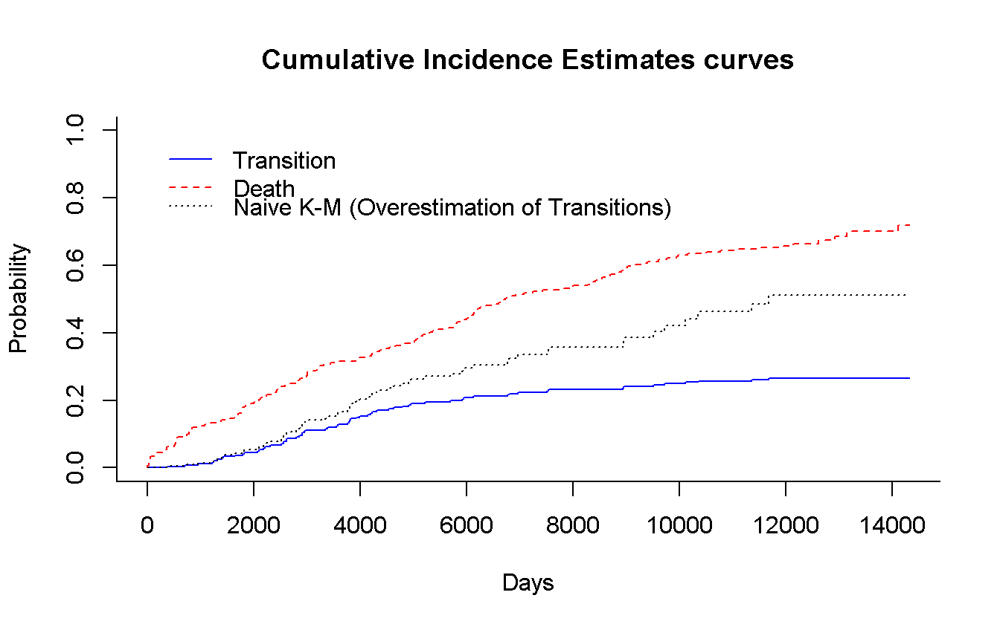
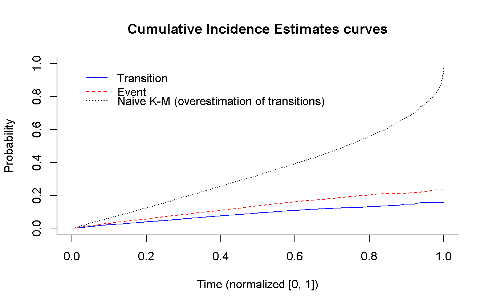
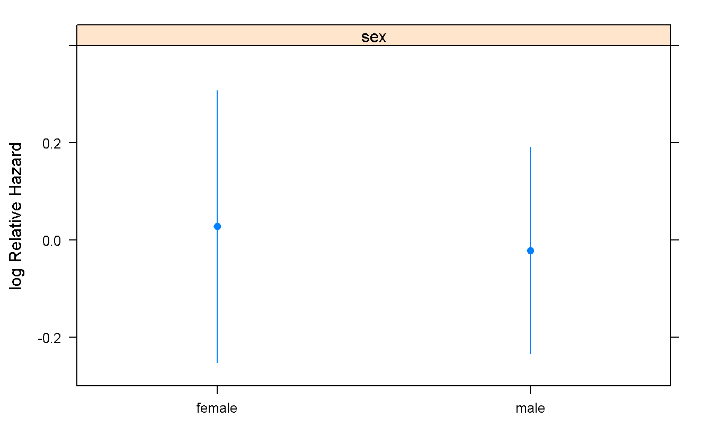
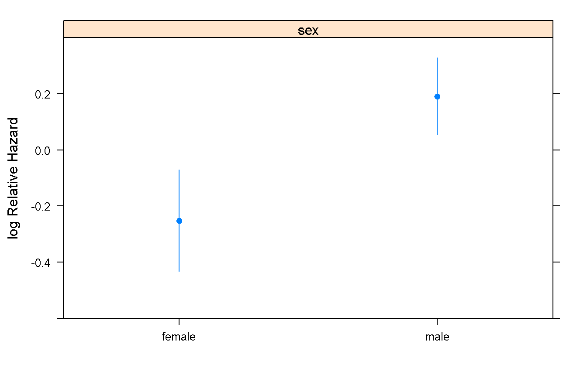

Chapter 3 Wednesday: Competing risk
3.1 Key (operative) concepts
3.2 Data manipulation
set.seed(171004)
data(mgus, package = 'survival')
# ?mgus
mgus_df <- as_tibble(mgus)
dd <- datadist(mgus_df)
mgus_df## # A tibble: 241 x 12
## id age sex dxyr pcdx pctime futime death alb creat hgb
## * <dbl> <dbl> <fctr> <dbl> <fctr> <dbl> <dbl> <dbl> <dbl> <dbl> <dbl>
## 1 1 78 female 68 <NA> NA 748 1 2.8 1.2 11.5
## 2 2 73 female 66 LP 1310 6751 1 NA NA NA
## 3 3 87 male 68 <NA> NA 277 1 2.2 1.1 11.2
## 4 4 86 male 69 <NA> NA 1815 1 2.8 1.3 15.3
## 5 5 74 female 68 <NA> NA 2587 1 3.0 0.8 9.8
## 6 6 81 male 68 <NA> NA 563 1 2.9 0.9 11.5
## 7 7 72 female 68 <NA> NA 1135 1 3.0 0.8 13.5
## 8 8 79 female 69 <NA> NA 2016 1 3.1 0.8 15.5
## 9 9 85 female 70 <NA> NA 2422 1 3.2 1.0 12.4
## 10 10 58 male 65 <NA> NA 6155 1 3.5 1.0 14.8
## # ... with 231 more rows, and 1 more variables: mspike <dbl>- Find number of patient with malignancy (AKA transition), death (w/out malignancy) and Free of Events.
mgus_df <- mgus_df %>%
mutate(
malignancy = !is.na(pcdx)
)
mgus_df %>%
group_by(malignancy, death) %>%
summarise(n = n())## # A tibble: 4 x 3
## # Groups: malignancy [?]
## malignancy death n
## <lgl> <dbl> <int>
## 1 FALSE 0 14
## 2 FALSE 1 163
## 3 TRUE 0 2
## 4 TRUE 1 62Patients with malignancy as a First Observed Event (FOE) are 64; patients which experiment death as FOE are 163, while the ones FoE are 14. 163.
- Find the indicator for censored, malignancy and death (
indicator) - Find the time-to-event to use in the models (
time_t)
mgus_df <- mgus_df %>%
mutate(
indicator = if_else(malignancy, 1, 2 * death),
time_t = pmin(futime, pctime, na.rm = TRUE)
)
mgus_df## # A tibble: 241 x 15
## id age sex dxyr pcdx pctime futime death alb creat hgb
## <dbl> <dbl> <fctr> <dbl> <fctr> <dbl> <dbl> <dbl> <dbl> <dbl> <dbl>
## 1 1 78 female 68 <NA> NA 748 1 2.8 1.2 11.5
## 2 2 73 female 66 LP 1310 6751 1 NA NA NA
## 3 3 87 male 68 <NA> NA 277 1 2.2 1.1 11.2
## 4 4 86 male 69 <NA> NA 1815 1 2.8 1.3 15.3
## 5 5 74 female 68 <NA> NA 2587 1 3.0 0.8 9.8
## 6 6 81 male 68 <NA> NA 563 1 2.9 0.9 11.5
## 7 7 72 female 68 <NA> NA 1135 1 3.0 0.8 13.5
## 8 8 79 female 69 <NA> NA 2016 1 3.1 0.8 15.5
## 9 9 85 female 70 <NA> NA 2422 1 3.2 1.0 12.4
## 10 10 58 male 65 <NA> NA 6155 1 3.5 1.0 14.8
## # ... with 231 more rows, and 4 more variables: mspike <dbl>,
## # malignancy <lgl>, indicator <dbl>, time_t <dbl>- Estimate the naive K-M and the cumulative incidence functions
# Using survival
cuminc(mgus_df$time_t, mgus_df$indicator) %>% # ?cmprsk::cuminc
plot( # ?cmprsk:::plot.cuminc
main = 'Cumulative Incidence Estimates curves',
col = c('blue', 'red'),
xlab = 'Days',
curvlab = c('Transition', 'Death'),
wh = c(1, 1) # legend position
)
survfit(Surv(time_t, malignancy) ~ 1, # using `rms::npsurv()` is the same
data = mgus_df
) %>%
lines( # Use `lines()` to draw over the previous plot
fun = 'event', # plot the cumulative events
conf.int = FALSE,
col = 'black',
lty = 3
)
legend(x = 1, y = 0.86,
legend = 'Naive K-M (Overestimation of Transitions)',
col = 'black',
lty = 3,
bty = 'n' # remove box arround the legend (because we have to add an entry)
)
3.3 Simulation of Competing risk
- Specify two cause-specific exponential hazard \(\lambda_1(t)\) and \(\lambda_2(t)\) of means \(0.8\) and \(1.2\). (Set sample size as you like.)
n <- 1e4
lambda_1 <- 0.8
lambda_2 <- 1.2- Simulate survival times \(T\) based on the all causes hazard \(\lambda_.(t) = \lambda_1(t) + \lambda_2(t)\).
lambda <- lambda_1 + lambda_2
surv_time <- rexp(n,
rate = 1 / lambda
)- Generate Bernoulli \(B(p)\) random variables, with \(p = \lambda_1(t) / \lambda_.(t)\), i.e. is the probability of occurrence of the event of type 1.
p_cens <- lambda_1 / lambda
transition <- rbinom(n,
size = 1,
prob = p_cens
) %>%
as.logical # Set as logical to use the variable for conditional statements- Simulate uniform censoring times over \([0, 1]\).
censor_time <- runif(n,
min = 0,
max = 1
)- Estimate the Cumulative Incidence of each competing event, with and without censoring; discuss the results.
# create the dataset
sim_data <- data_frame(
id = seq_len(n),
transition = transition,
surv_t = surv_time,
cens_t = censor_time,
time_t = pmin(surv_t, cens_t),
status = case_when(
time_t == cens_t ~ 0L, # All the censored patients has status 0
transition ~ 1L, # Among the other, the ones which has a transition
# have state 1
TRUE ~ 2L # All the other were dead (before the end of f-up)
)
)
# Explore a (random) sample of three cases for each staus
sim_data %>%
group_by(status) %>%
sample_n(3)## # A tibble: 9 x 6
## # Groups: status [3]
## id transition surv_t cens_t time_t status
## <int> <lgl> <dbl> <dbl> <dbl> <int>
## 1 6759 FALSE 6.844765752 0.5175084 0.517508388 0
## 2 906 TRUE 1.378642827 0.5063402 0.506340163 0
## 3 3568 TRUE 0.623047318 0.5752797 0.575279657 0
## 4 2196 TRUE 0.506380841 0.9344626 0.506380841 1
## 5 8119 TRUE 0.157231928 0.9007847 0.157231928 1
## 6 5854 TRUE 0.742379822 0.8771130 0.742379822 1
## 7 1685 FALSE 0.539729742 0.9635529 0.539729742 2
## 8 4550 FALSE 0.001042022 0.3692372 0.001042022 2
## 9 6893 FALSE 0.410360153 0.9322769 0.410360153 2# Using survival
cuminc(sim_data$time_t, sim_data$status) %>% # ?cmprsk::cuminc
plot( # ?cmprsk:::plot.cuminc
main = 'Cumulative Incidence Estimates curves',
col = c('blue', 'red'),
xlab = 'Time (normalized [0, 1])',
curvlab = c('Transition', 'Event'),
wh = c(0.01, 1) # legend position
)
survfit(Surv(time_t, transition) ~ 1, # using `rms::npsurv()` is the same
data = sim_data
) %>%
lines( # Use `lines()` to draw over the previous plot
fun = 'event', # plot the cumulative events
conf.int = FALSE,
col = 'black',
lty = 3
)
legend(x = 0.01, y = 0.86,
legend = 'Naive K-M (overestimation of transitions)',
col = 'black',
lty = 3,
bty = 'n' # remove box arround the legend (because we have to add an entry)
)
3.4 Estimation of the effect of sex on MGUS incidence
- Compare the results of Cox cause specific hazard model…
For clinical questions, i.e. cause specific risk to experiment the event without taking into account the other couse(s)
dd <- datadist(mgus_df)
cox_sex <- cph(Surv(time_t, malignancy) ~ sex,
data = mgus_df,
x = TRUE,
y = TRUE
)
summary(cox_sex) # this is good for a clean view of the effects## Effects Response : Surv(time_t, malignancy)
##
## Factor Low High Diff. Effect S.E. Lower 0.95 Upper 0.95
## sex - female:male 2 1 NA 0.049342 0.25103 -0.44268 0.54136
## Hazard Ratio 2 1 NA 1.050600 NA 0.64232 1.71830cox_sex # Here there are more informations (and the p-values)## Cox Proportional Hazards Model
##
## cph(formula = Surv(time_t, malignancy) ~ sex, data = mgus_df,
## x = TRUE, y = TRUE)
##
## Model Tests Discrimination
## Indexes
## Obs 241 LR chi2 0.04 R2 0.000
## Events 64 d.f. 1 Dxy -0.039
## Center -0.028 Pr(> chi2) 0.8441 g 0.024
## Score chi2 0.04 gr 1.025
## Pr(> chi2) 0.8441
##
## Coef S.E. Wald Z Pr(>|Z|)
## sex=male -0.0493 0.2510 -0.20 0.8442
## Predict(cox_sex) %>% # It is necessary to have the predictions for the plot
plot
cox_sex_death <- cph(Surv(time_t, indicator == 2) ~ sex,
data = mgus_df,
x = TRUE,
y = TRUE
)
summary(cox_sex_death)## Effects Response : Surv(time_t, indicator == 2)
##
## Factor Low High Diff. Effect S.E. Lower 0.95 Upper 0.95
## sex - female:male 2 1 NA -0.44221 0.16183 -0.75939 -0.12502
## Hazard Ratio 2 1 NA 0.64262 NA 0.46795 0.88248cox_sex_death## Cox Proportional Hazards Model
##
## cph(formula = Surv(time_t, indicator == 2) ~ sex, data = mgus_df,
## x = TRUE, y = TRUE)
##
## Model Tests Discrimination
## Indexes
## Obs 241 LR chi2 7.65 R2 0.031
## Events 163 d.f. 1 Dxy 0.124
## Center 0.2514 Pr(> chi2) 0.0057 g 0.218
## Score chi2 7.59 gr 1.243
## Pr(> chi2) 0.0059
##
## Coef S.E. Wald Z Pr(>|Z|)
## sex=male 0.4422 0.1618 2.73 0.0063
## Predict(cox_sex_death) %>%
plot
- …to those of the Fine and Gray model
For administrative questions, i.e. overall risk of experiment each event taking into account the competing risk
mgus_num <- mgus_df %>%
mutate(sex = as.numeric(sex))
crr(
ftime = mgus_num$time_t,
fstatus = mgus_num$indicator,
cov1 = mgus_num$sex
) %>%
summary## Competing Risks Regression
##
## Call:
## crr(ftime = mgus_num$time_t, fstatus = mgus_num$indicator, cov1 = mgus_num$sex)
##
## coef exp(coef) se(coef) z p-value
## mgus_num$sex1 -0.339 0.713 0.249 -1.36 0.17
##
## exp(coef) exp(-coef) 2.5% 97.5%
## mgus_num$sex1 0.713 1.4 0.437 1.16
##
## Num. cases = 241
## Pseudo Log-likelihood = -341
## Pseudo likelihood ratio test = 1.83 on 1 df, # here we do not have a way to plot